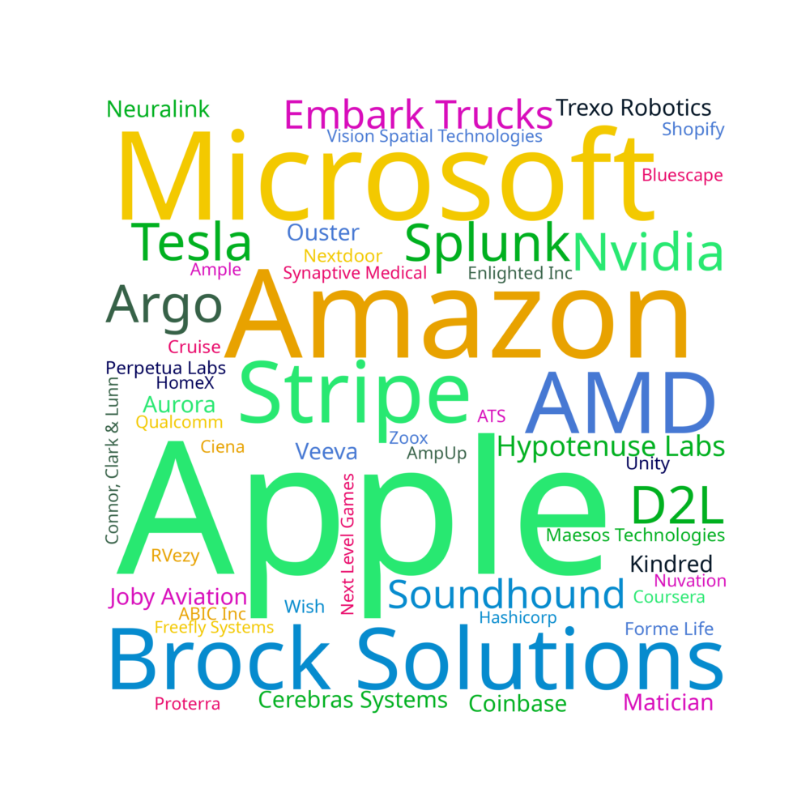

View this website on desktop for the best experience!
One-Year Outlook
80% of people thought they'd be working full time one year from when they submitted the survey, with most of those people already having a job lined up
Full-time Job Employment Arrangement
The vast majority of Trons signed normal full-time job employment agreements
Full Time Job: Was it a previous co-op?
Not only does the co-op program help develop skills for the workforce, 60% of respondents also returned to a co-op employee for a full time job after graduating!
Full Time Job Companies

A good mix of well-known names and small startups in here!
Full-Time Type of Work
Most of us are doing some kind of software, but there is a sizable amount of other responsibilities
Full Time Job: Why'd you pick it?
Not much more to say about this one
Full Time Job: Salaries
Let's make that money!!! ü§ë‚öôÔ∏è
Full Time Job: Total Compensation (CAD) vs. Location
Someone in Ontario got crazy equity!
Full Time Job: Signing Bonuses
Most people didn't get any signing bonuses.
Full Time Job: Signing Bonus by Location
Seattle with them signing bonuses what the...
Full Time Job: Compensation vs. Gender
The pay gap re-emerges üòî
Full Time Job: Cumulative Universaty Average vs. Salary
Surprisingly, there's a good correlation between university average and full time pay, at least for people who got more than a 75%
Full-time Job Location
For people who've had a full time job lined up, the highest concentration of people are in California. A sizeable portion of us are in the GTA and BC as well.
Working Abroad: Why did you leave Canada?
The brain drain is evident here, many of our smart colleagues left Canada because of better compensation south of the border.
Working Abroad: Would you return to Canada sometime?
Most people want to return to Canada after working abroad üá®üá¶
Higher Education Completed After Ten Years
The amount of people who don't want anything to do with school and the number of people who want to do a masters in engineering is roughly equal
Grad School: Lined Up?
16 people indicated that they were going to grad school after finishing undergrad. 75% of them had an offer when responding to this survey at the end of 4B.
Grad School: Program
Mechanical and Mechatronics Engineering
Systems Design Engineering
Mechatronics Engineering - Controls Research
MASc - Mechanical and Mechatronics Engineering
Dual degree in Law and Masters of Public Policy
Most people continued with some kind of engineering graduate degree, but some people branched out into Law or Mathematics.
Grad School: University
UW was popular for people's graduate school
Grad School: Why?
More knowledge on RF systems and reserach experience
A job in the field on interest
More academic knowledge, expanded professional and academic network
Deeper understanding and application
Relevant experience, knowledge
Exposure to the medical field
technical competencies and research skill/vision/taste
A career change - hoping to transition to tech policy
Research experience and a better university experience
Most people wanted to do graduate studies for deeper knowledge and experience for their field of interest.
Grad Trip?
Over 70% of people had a grad trip planned after 4B. Most people probably caught the travel bug from a combination of being done with a difficult university program and the isolation of COVID in the past few years.
Grad Trip: Where?
A lot of the class was in Western Europe after graduating! Flights were cheap, 'rona was (a bit) relaxed and the vibes were great! Canada and the US were also popular, and yet others went to more exotic places
Grad Trip: Length
Most people went for a couple weeks, but someone had a 3 month trip planned!
Tron Friends After Ten Years
Most people thought they'd be friends with at least a person from Tron in ten years!
Marriage Age
The vast majority of people would like to get married in the future, with most aiming for between 25-30
Children Age
There is more variability in when and if people want children. 13% of people don't plan to have kids at all.
Comments on the Overall Tron Experience
tron is a mistake but its a good mistake to make
Mechatronics was not a mistake
One issue is that due to the job market/compensation, many people in the class tend to lean towards software. As someone on the mechancial side this really leaves a handful of people I can speak mech with. Overall it seems like I'm in the wrong program in this sense. Mechatronics feels like it's more ECE than ME.
I think it's a poorly designed program that has to potential to be good but not in a good state right now. There are a ton of useless courses if someone is trying to go into robotics. They should make 3 separate streams after 2B where we can pick a cluster of courses to specialize in (similar to how EngSci at UofT does it).
Breadth of program is a double-edged sword. If you know what you're interested in doing, it would be good to transfer into a program that better matches
I wish I learned less about mechanical stuff
There were things I didn't like but I would do it all againROBOTS!
I enjoyed it, and will miss the class
You already know mechatronics was a mistake but the people made it worthwhile
Tron was great, negative and positive experiences consideredWorth it.
There were a variety of opinions about the Tron experience, I tried to capture the most common sentiments.
What's the best lesson that you learned from this experience?
profs are there to help you (well most of them) and having friends in class goes long way (as in assignments studying for exams etc)
Make memories with those you care about, and prepare in advance if you want things to be easier for future you.
University is a very unique point in your life where a lot of your friends are in a very close proximity to you and you can do a lot of things if you want. Enjoy your time, go out and try things, and if you're ever feeling down don't hesitate to reach out to your friends and network cuz they're more willing to help you out more than you think.
Time management: start early!
Find the reason why you are here striving
You need friends to rely on to help you through school
Again, a variety of lessons, but putting more focus on friendships was a common theme.
Any advice for young Trons?
Wait until the end of 2B before you judge yourself. If you perform poorly in first year, it's because you're still adjusting to university or your high school did not prepare you properly. I went from a 28% on my first lin alg quiz to Dean's List in 2B.
Yes, don't listen to the upper years. They are pretentious and love to complain to their subordinates about how hard their life is.
You'll be fine, just keep going at your own pace.
The interview is a game, treat it as such
Make the most of your university life. Meet people, do stupid things, have fun. It'll rush by, so cherish it :)
:)